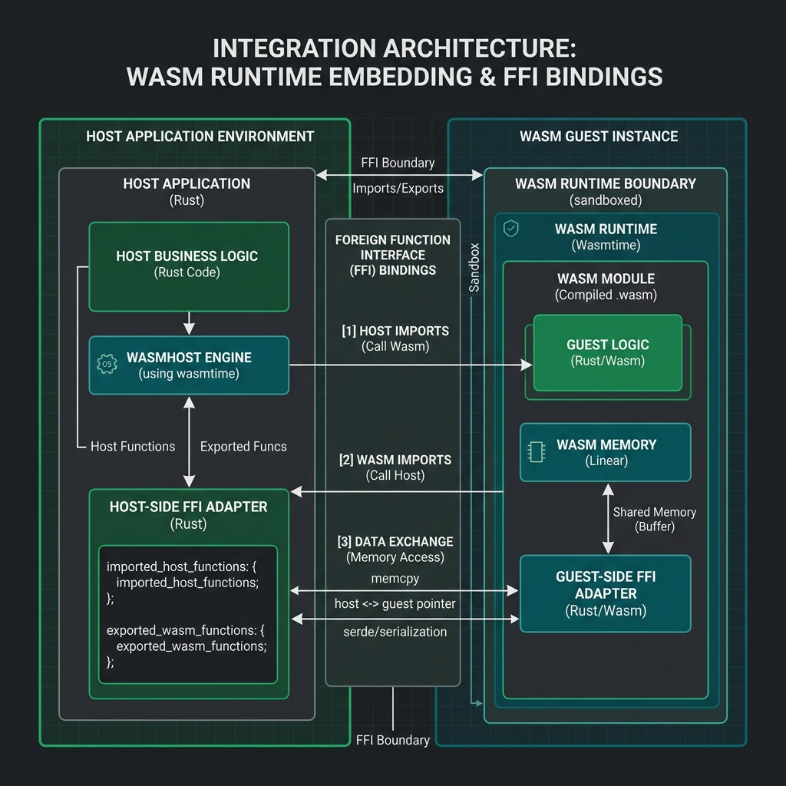

Série: Blindagem de Sistemas — Módulo 05
A Rampa de Alto Nível: Integrando Rust no Ecossistema Legado

Nota do Desenvolvedor: O caso a seguir representa uma simulação prática de engenharia com base em ameaças e ocorrências reais do ecossistema corporativo.
1. O Incidente: O Gargalo e a Queda na Assinatura de Documentos
Uma grande fintech nacional que gerencia contratos digitais de empréstimo consignado observou um pico de lentidão intolerável em seus servidores durante o horário comercial. A API principal, escrita em Node.js, travava completamente seu ciclo de eventos (Event Loop) ao realizar o processamento criptográfico pesado e a geração de assinaturas digitais nos arquivos PDF de centenas de contratos concorrentes.
Com o Node.js ocupado processando a matemática complexa da criptografia de forma síncrona na CPU, nenhuma nova requisição HTTP conseguia ser atendida, disparando timeouts em cascata. Reescrever a aplicação inteira em uma linguagem de baixo nível demandaria meses. A saída de engenharia foi isolar o processador criptográfico em um pequeno módulo compilado em Rust, encaixado direto no ecossistema Node.js existente.
"Se você tentar ensinar baixo nível clássico com aritmética de ponteiros direto para programadores web acostumados com Node.js ou Java, a turma foge correndo. A rampa de acesso inteligente é a integração híbrida. Pontes de FFI e WebAssembly funcionam como tradutores expressos na fronteira: em vez de construir um aeroporto internacional totalmente novo do zero (que seria reescrever o sistema inteiro), você instala apenas uma alfândega moderna e blindada (o módulo em Rust) dentro do aeroporto que você já tem funcionando (a API Node.js/Spring Boot). As requisições comuns continuam pousando normalmente, mas a triagem pesada e a segurança de carga crítica são feitas pela nova equipe de elite."
2. O Diagnóstico: Pontes de Integração e Abstração Hexagonal

Ao transicionar do desenvolvimento focado exclusivamente em APIs de alto nível para sistemas robustos, a engenharia utiliza duas pontes tecnológicas principais para integrar o Rust com linguagens gerenciadas:
- FFI (Foreign Function Interface): Permite que uma aplicação em Python, Java ou C# carregue e execute uma biblioteca compilada (arquivo .dll ou .so) escrita em Rust diretamente no espaço de memória nativa da aplicação mãe.
- WebAssembly (Wasm) no Server-Side: Compilar o módulo Rust para bytecode Wasm e rodá-lo dentro de sandboxes isoladas e rápidas nativamente no Node.js ou em infraestruturas de borda (Edge Computing), sem riscos de segurança de ponteiros brutos.
Essa organização deve seguir os princípios da **Arquitetura Hexagonal**. O núcleo puro e seguro (Core em Rust) fica totalmente blindado no centro, enquanto as APIs legadas de alto nível atuam como adaptadores externos que se comunicam através de interfaces (Ports) definidas.
3. Mitigação: Como Engenheirar a Transição Híbrida
O gargalo da fintech foi mitigado dividindo o fluxo operacional em camadas lógicas:
- Mapeamento das Portas: Criar um contrato de comunicação isolado na API Node.js.
- Compilação da Ponte: Utilizar ferramentas como
napi-rs(para Node.js) ou o Project Panama (para Java) para expor as funções de criptografia do Rust de forma assíncrona, evitando que o ciclo de eventos principal da aplicação web seja bloqueado durante o processamento pesado.
Revisão de Linha de Frente (Resumo do Aprendizado)
- Evolução Híbrida: Não é necessário reescrever sistemas inteiros. O foco deve ser migrar apenas os gargalos críticos de processamento ou segurança de memória.
- FFI vs WebAssembly: FFI entrega performance máxima com acesso nativo direto; WebAssembly entrega portabilidade e isolamento rígido em Sandbox.
- Design Hexagonal: Padrão essencial para isolar as chamadas lógicas de baixo nível das regras de negócios de alto nível das aplicações de backend.
Dicionário de Trincheira (Para Leigos e Executivos)
- Conexão entre Linguagens (FFI - Foreign Function Interface): O mecanismo técnico que permite a um sistema escrito em uma linguagem de alto nível (como Java ou Node.js) invocar rotinas de baixo nível escritas em outra (como C ou Rust) sem a necessidade de APIs de rede lentas.
- Ambiente de Execução Isolado (WebAssembly - Wasm): Uma máquina virtual de alto desempenho rodando no servidor que executa rotinas de código de baixo nível em uma caixa de areia estanque, blindando o restante do sistema operacional.
- Fila de Eventos (Event Loop): O fluxo principal responsável pelo gerenciamento de tarefas de forma assíncrona. Se uma tarefa pesada de processamento CPU for executada nessa fila, todas as outras conexões dos clientes travam.
- Isolamento de Domínio (Design Hexagonal): Um padrão arquitetural de software que separa a lógica de negócios das saídas físicas (redes, conexões e bancos de dados), assegurando que o código crítico continue funcionando intocado em migrações.
- Acoplamento Tecnológico (Tight Coupling): O erro de projeto onde módulos internos de um sistema são dependentes de especificidades de uma biblioteca externa de forma rígida, impossibilitando a troca ou migração de infraestrutura sem reescrever o código por inteiro.
— Fim do Módulo 05. Continua no Módulo 06: Copilotos da Segurança. Índice da série em: Chamada e Índice.